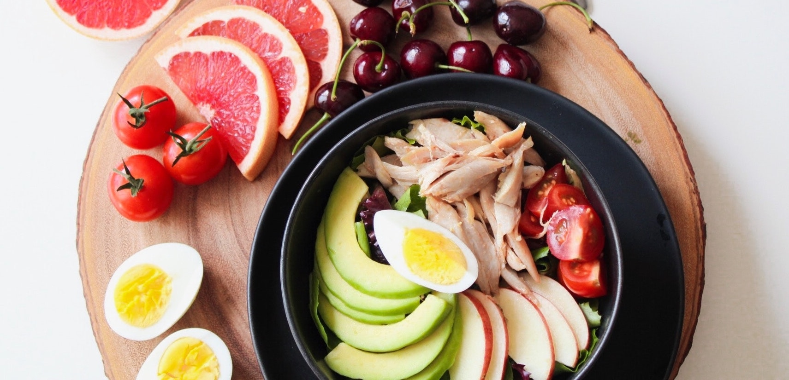

Our Promotional Material
Access our promotional flyer here.
The goal of our marketing campaign is to provide information about our solution and implementation plan to everyone who is impacted by our proposed changes, such as students and teachers at Cupertino High School. As the marketing specialist in our team, I was in charge of creating marketing components for our proposal.
My group agreed to make two key promotional materials for our marketing campaign: a website with comprehensive information about our research and polling, and a flyer. The flyer has a QR code that links directly to our website. To minimize costs of money and time, I built the website from scratch with the help of a template and used stock photos to create immersive campaign materials.
As the marketing specialist, I decided to I incorporated design elements such as clean sans-serif fonts, high quality stock photography, and vibrant colors. This would not only make our materials easy to read but also make them visually appealing so people affected by our proposal will read it thoroughly.
Our website is separate into multiple subpages, including one for the history of our problem and the interviews our community outreach team member conducted. Our landing page introduces the problem we are trying to solve with links users to all of our subpages. We also decided to make our data from the polling process public to increase transparency for our initiative. All of the graphs generated by our financial analyst were also included in the web page.
Our page also features a link to our promotional flyer so students who agree with our cause can print a few out and encourage support for our plan in the school. I incorporated visuals to better illustrate the first part of our solution, increasing the amount and distribution of water bottles in the cafeteria.
Compiled by Varun Shenoy